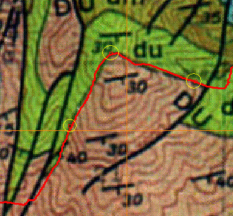

-
 New DEM--required for
3D geometry
New DEM--required for
3D geometry -
 New scanned map--optional
for situational awareness. You can also use a
satellite image, orthophotography, and a WMS service.
New scanned map--optional
for situational awareness. You can also use a
satellite image, orthophotography, and a WMS service.
Contact from Three Point Problem
| Click Three Point button | |
 |
Double click three points along the contact or
bedding plane. The three points are circled in yellow. The points must be as far from collinear as possible. If you have no choice except to pick collinear points, that tells you something about the dip of the feature, and decreases the reliability of the result. The plane's trace will be drawn, in the color on the "Contact" button. Note in this case that the contact follows the mapped contact, at least within this fault block. If you cross faults, this method will not be valid, and if the contact is not in fact planar, it will not be accurate either. |
| The memo field will show the three points used to determine the plane, and the computed dip and strike. |
Last revision 7/25/2016